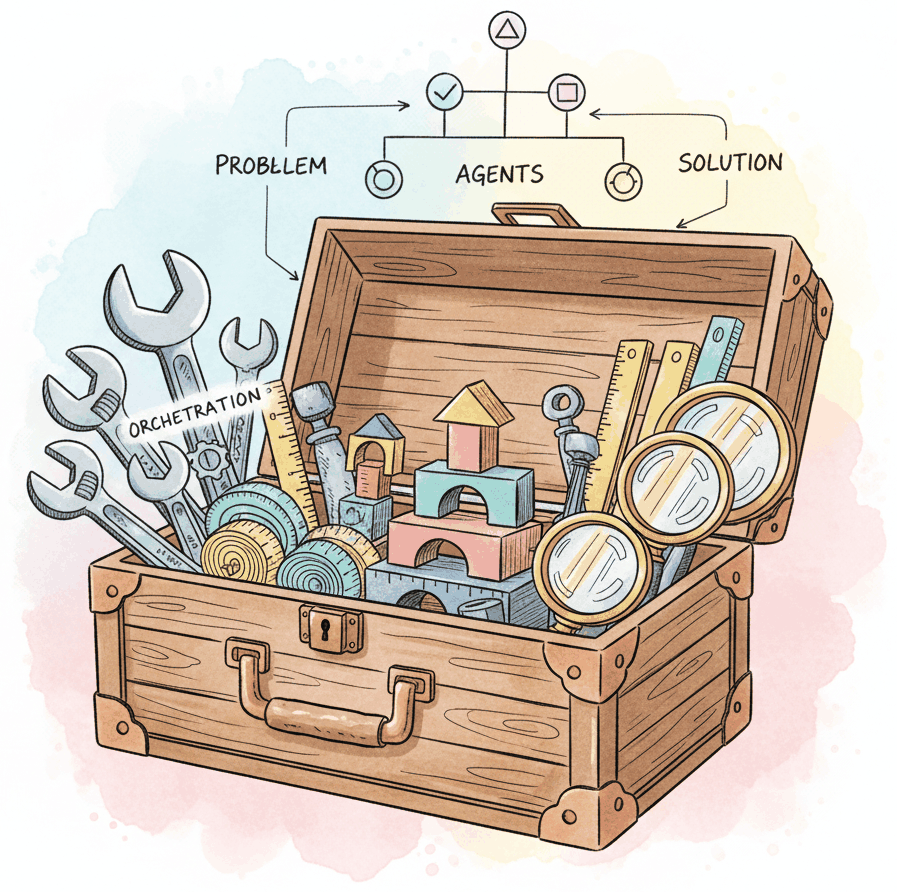

The LLM tooling ecosystem has grown rapidly, with dozens of frameworks competing across orchestration, agents, evaluation, serving, and fine-tuning. Choosing the right combination of tools is one of the most consequential early decisions in any LLM project, yet most teams make these choices based on blog posts, Twitter buzz, or whichever framework they encountered first. This appendix provides structured comparisons, decision tables, and selection criteria so you can choose the right tool for each layer of your AI stack based on your actual requirements.
This appendix is a hands-on reference. For the architectural patterns the tools listed here implement, see Chapter 23: Multi-Agent Systems. Use this appendix when you need quick API recall or a code recipe; use the chapter when you need to understand why a pattern works.
The appendix organizes the landscape into categories: orchestration frameworks (LangChain, LlamaIndex, Haystack, DSPy), agent frameworks (LangGraph, CrewAI, AutoGen, OpenAI Agents SDK), inference servers (vLLM, TGI, SGLang, Ollama), fine-tuning tooling (HuggingFace, Axolotl, Unsloth), evaluation platforms (RAGAS, DeepEval, Braintrust), and enterprise SDKs (Semantic Kernel, Spring AI). For each category, you will find feature matrices, architectural tradeoffs, community health metrics, and concrete decision flowcharts.
This appendix serves as a map for the preceding framework-specific appendices (K through U). Read it first for an overview, or return to it after exploring individual tools to compare alternatives and validate your choices.
The tools that have a dedicated deep-dive appendix are Appendix K (HuggingFace), Appendix L (LangChain), Appendix M (Experiment Tracking), Appendix N (Inference Serving), Appendix O (Distributed ML), and Appendix P (Docker). LangGraph, CrewAI, LlamaIndex, Semantic Kernel, and DSPy are surveyed here with pointers to their primary documentation. The foundational concepts behind API access are in Chapter 11 (LLM APIs).
Read Chapter 11 (LLM APIs) to understand the provider interfaces that all these frameworks wrap. Beyond that, no specific chapter is required; this appendix is designed to be accessible at any point in your reading. However, the comparisons will be more meaningful if you have encountered at least one framework in practice or have read its corresponding appendix.
Consult this appendix at the start of a new project when you need to select your tooling stack, when evaluating whether to migrate from one framework to another, or when a team member advocates for a tool you have not used. The decision flowcharts help you narrow options quickly based on your use case (RAG, agents, fine-tuning, serving), team language preferences (Python, C#, Java), and deployment constraints (cloud, on-premise, edge). Return to it periodically as the ecosystem evolves, since the landscape shifts significantly every six to twelve months.